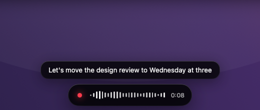
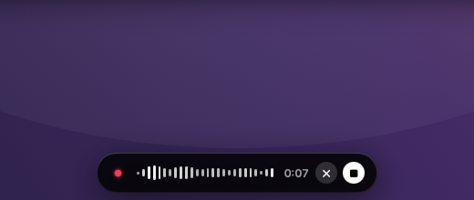
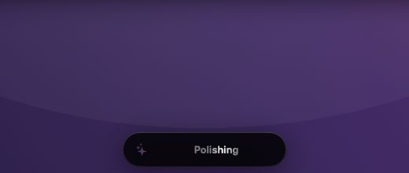
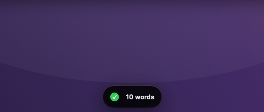
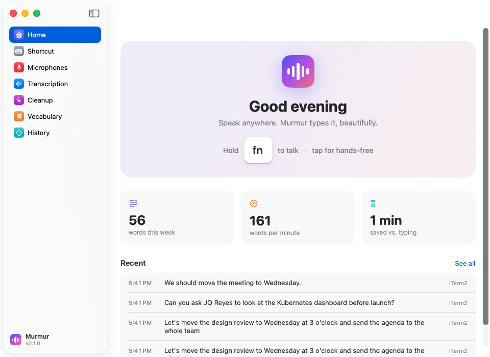
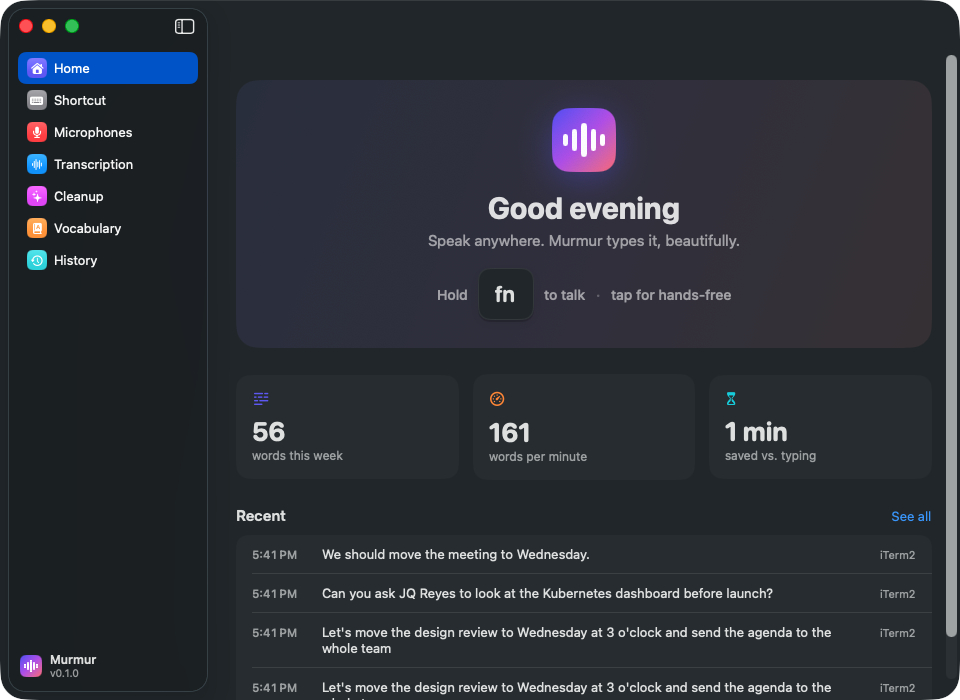
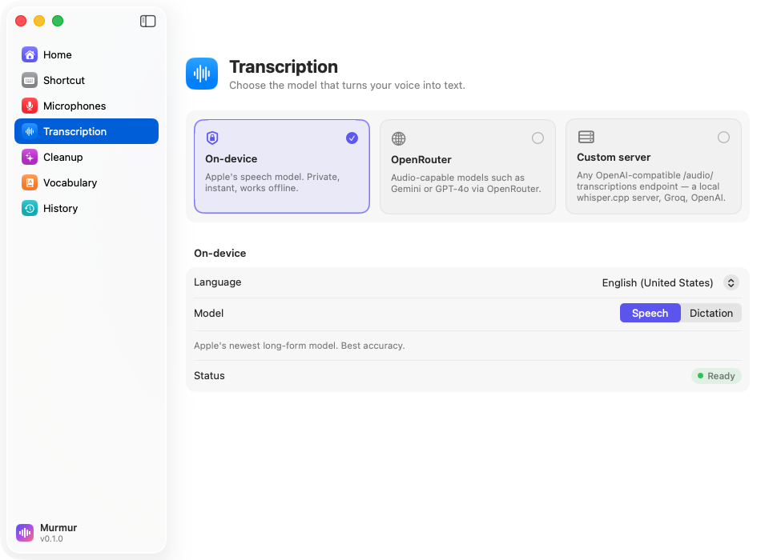
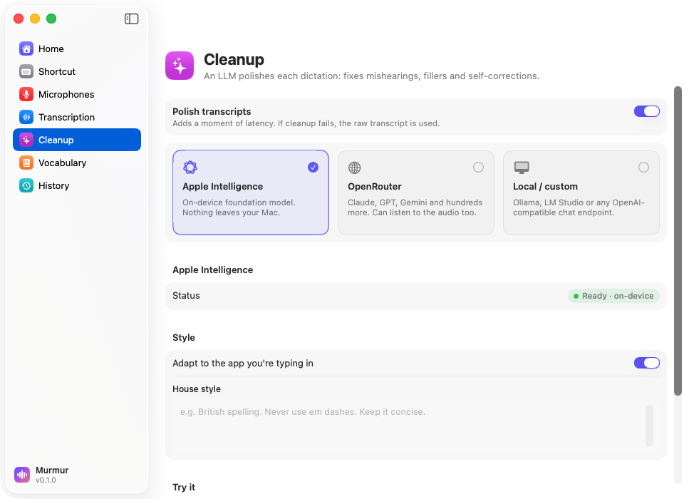
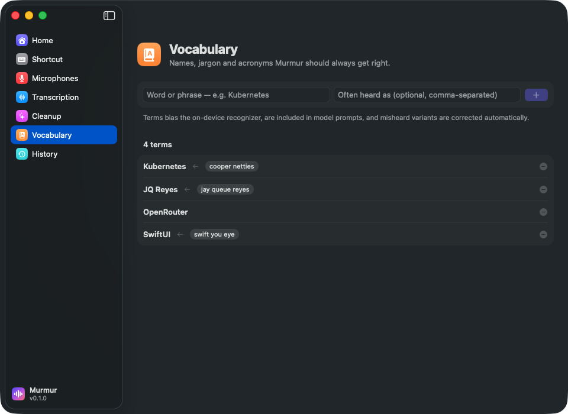
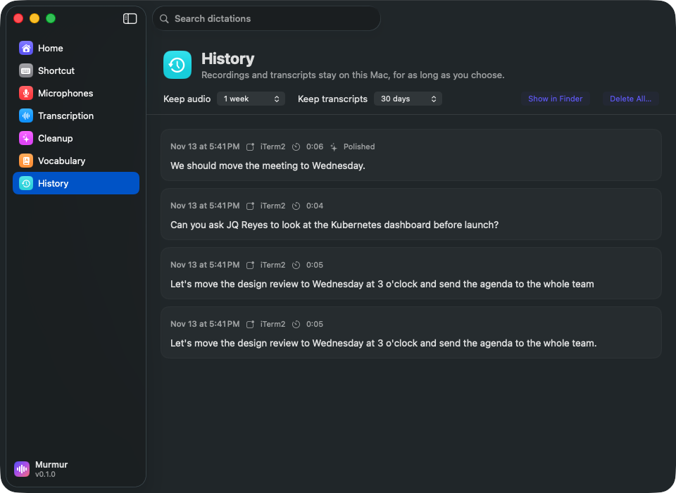

Hold fn, talk, let go. Murmur transcribes, fixes what it misheard, polishes it, and types it wherever your cursor is.
A native Mac app with a Rust core, built to be fast, private by default, and pleasant to look at.
Hold fn, right ⌥ or any custom shortcut to talk. Tap once for hands-free, esc to cancel.
Apple's SpeechAnalyzer transcribes locally with a live preview, in about a tenth of a second after you let go.
Gemini and other audio models via OpenRouter, or your own Whisper-compatible server.
An LLM removes ums, applies "no wait, I mean…" corrections and fixes mishearings. Apple Intelligence, OpenRouter, or Ollama.
Names, jargon and acronyms that steer the recognizer, go into every prompt, and correct known mishearings automatically.
Rank your microphones. If one disconnects or goes silent mid-sentence, Murmur switches to the next one.
Keep audio and transcripts for a day, a year or not at all. Replay, copy or re-transcribe any of them.
Signed DMG and PKG installers, plus an MDM profile that pre-approves Accessibility.
The same pipeline runs whichever models you choose.
A small pill at the bottom of the screen. It never takes focus from the app you're typing in.




SwiftUI throughout, laid out like System Settings.






With the default settings, nothing leaves your Mac. Remote models are opt-in, and you choose exactly which ones.
Then allow Microphone and Accessibility when asked. Tip: set System Settings › Keyboard › "Press 🌐 key to" to "Do Nothing".
For Installer or MDM deployment (Addigy, Jamf, Kandji…), with an optional PPPC profile.
Swift 6 and Rust.
brew install rust create-dmg git clone https://github.com/jmaddington/murmur cd murmur && ./scripts/build.sh open build/Murmur.app